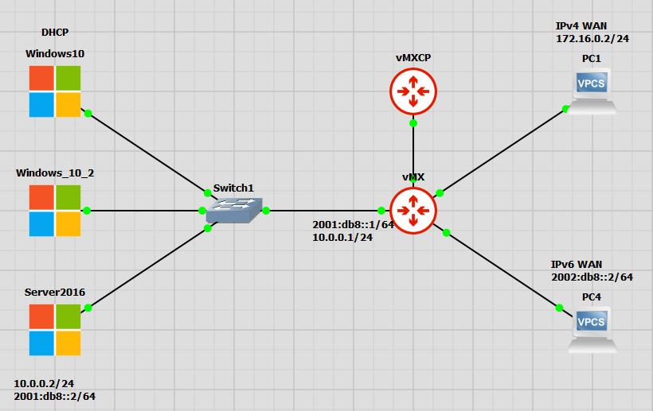

IPv6 SLAAC and DHCP - Juniper
Types of IPv6 addresses in Windows 10
- DHCP: DHCP is the DHCPv6 address assigned to the machine.
DHCP can run at the same time as SLAAC or independently.
Does not provide default gateway information unless a router is connected to the network for Router Solicitation and Router advertisement (RS and RA.)
- Temporary: If SLAAC is enabled on the network a host may elect to use a SLACC address for communications with the outside world
There can be multiple temporary SLAAC address on a machine, and individual programs can grab ones
Buggy programs or process stuck in loops can open hundreds of temporary addresses.
- A good short read on temporary addresses
- Public: SLAAC IPV6 address
Can coexist with DHCPv6 address
- Other: The other address is the Link local address
All IPv6 nodes will always have a link local address for neighbor discovery
- Uses EUI-64
This is why the host portion of the Public and Other address are identical

The process of addressing an IPv6 node
Once connected, a new node creates a Link Local address for neighbor discovery
- The node will send a Neighbor Solicitation (NS) messages to verify the address is not in use
NOTE: If an address is in use, then the link local address will need to be manually configured, autoconfiguration will stop at this point. Because Link local uses EUI-64, which is based off the mac address of the NIC it can only create one link local address
- The node will now send out Router Solicitation messages (RS) to the All routers multicast address FF02::2 from the link local address (in the fe80::/64 network)
- If a Router Advertisement is not received the new node will begin soliciting for a DHCP server via the All-devices address FF02::1
If this happens the node will not have a default gateway, DHCP does not create a default gateway with IPv6
- The node will receive back a Router Advertisement (RA) with instructions on how to connect
- The RA will contain the following information:
Subnet prefix of the network in use
Inform the node to use SLAAC or Stateful DHCPv6
From this point the node will finish autoconfiguring using either SLAAC or DHCPv6
Types of Stateless Address Autoconfiguration (SLAAC)
- EUI-64: Converts MAC address into the host address of an IPv6 address
- A great video on EUI-64
- Random: Some nodes can elect to use privacy extensions and create random addresses for the host portion of their address (the last 64 bits)
This is supported by windows and is called Privacy Extensions
Is based on RFC 4941
IPv6 solicited-node multicast addresses
- A node will take the last 24 bits (last 6 hex characters) and append them to ff02::1:ff to create their solicited-node multicast address.
This is how all IPv6 nodes can be in a multicast message without broadcast.
- A great video on multicast addresses
Every node also has a “solicited node multicast address” as explained above. Each node also adopts one of these addresses.

Router Advertisement
- A Router Advertisement (RA) is sent from a router to a node every 200 seconds, or in response to a received Router Solicitation (RS). The RA can contain the following information:
IPv6 subnet in use on the network.
- The On-Link flag (L) state
Tells the node that the advertised prefix is also the local prefix
- The Autonomous address-autoconfiguration flag (A) state
Tells the node that SLAAC is being used
- The Managed address flag (M) state
Tells the node to use use stateful DHCPv6
Not in image below
- Other config flat (O) state
Tells the node there is further information
Not in image below
- A good article on Router Advertisements

Configuring static IPv6 addresses
We can configure static IP address in IPv6 just like in IPv4, the only consideration is the top 128 addresses in a /64 subnet are reserved anycast addresses.
- If router advertisements have been setup on the router we can configure a static IP (and DNS) on a node without defining the default gateway.
The RA will define the gateway for our machine.


Configure Stateless addressing (SLAAC) in Juniper This setup is fairly straightforward, you will need too:
Create an interface with an IPv6 address
Enable route-advertisements with the appropriate prefix
Juniper set command example
set interfaces ge-0/0/1 unit 0 family inet6 address 2001:db8::1/64
set protocols router-advertisement interface ge-0/0/1.0 prefix 2001:db8::/64
Juniper config example
interfaces {
ge-0/0/1 {
unit 0 {
family inet {
address 10.0.0.1/24;
}
family inet6 {
address 2001:db8::1/64;
}
}
}
protocols {
router-advertisement {
interface ge-0/0/1.0 {
prefix 2001:db8::/64
}
}
}
Configure stateful autoconfiguration with Windows DHCPv6 in Juniper
- This setup is like the stateless setup, plus one more command
- Under router-advertisement, interface, prefix we need to specify no-autonomous
This changes the A flag in the Router Advertisement message to unset, and hosts will not use SLAAC
This setup also woks with in Dual stacked environments
- You can verify these changes on a DHCPv6 node by
Verify any assigned IPv6 addresses are in the DHCP lease database
Verify there are no IPv6 address with address type “public”


- As you can see in the above image, the IPv6 default gateway is a link local address. This is normal and expected behavior.
Nodes can also use the network address (in this example 2001:db8::1) as the default gateway, however link local is default
Juniper set command example
set interfaces ge-0/0/1 unit 0 family inet6 address 2001:db8::1/64
set protocols router-advertisement interface ge-0/0/1.0 prefix 2001:db8::/64 no-autonomous
Juniper config example
interfaces {
ge-0/0/1 {
unit 0 {
family inet6 {
address 2001:db8::1/64;
}
}
}
protocols {
router-advertisement {
interface ge-0/0/1.0 {
prefix 2001:db8::/64 {
no-autonomous;
}
}
}
}
Lab setup
- Everything in this document was tested and verified working in a GNS3 environment.
You can view a recorded walkthrough of this lab here: https://www.youtube.com/watch?v=vFBpYX2VE0A
Configs for this lab can be found here: https://github.com/Jamous/IPv6_windows_juniper
- There are 4 networks in this environment:
IPv4 wan 172.16.0.0/24
IPv6 wan 2002:db8::/64
IPv4 lan 10.0.0.0/24
Ipv6 lan 2001:db8::/64
- 1 Juniper vMX with 3 interfaces
One for the IPv4 simulated wan
One for the IPv6 simulated wan
- One dual stacked interface for the lan running both
One IPv4 address
One IPv6 address
1 unmanaged switch
2 nodes on WAN links that we can ping
1 Windows server 2016, running DHCP and DNS
2 windows 10 clients on the lan
After setup we are able to verify that, as we add and remove nodes from the lan network they are able to acquire IPv4 and IPv6 addresses from the Windows server via DHCP and are able to have two way communication with the IPv4 and IPv6 WAN networks.

Juniper set commands
set interfaces ge-0/0/1 unit 0 family inet address 10.0.0.1/24
set interfaces ge-0/0/1 unit 0 family inet6 address 2001:db8::1/64
set interfaces ge-0/0/2 unit 0 family inet6 address 2002:db8::1/64
set interfaces ge-0/0/3 unit 0 family inet address 172.16.0.1/24
set protocols router-advertisement interface ge-0/0/1.0 prefix 2001:db8::/64 no-autonomous
Juniper config example
interfaces {
ge-0/0/1 {
unit 0 {
family inet {
address 10.0.0.1/24;
}
family inet6 {
address 2001:db8::1/64;
}
}
}
ge-0/0/2 {
unit 0 {
family inet6 {
address 2002:db8::1/64;
}
}
}
ge-0/0/3 {
unit 0 {
family inet {
address 172.16.0.1/24;
}
}
}
}
protocols {
router-advertisement {
interface ge-0/0/1.0 {
prefix 2001:db8::/64 {
no-autonomous;
}
}
}
}
Examples of packets discussed in this article
Neighbor Solicitation message

Neighbor Advertisement message

Router solicitation

Router advertisement

IPv6 Windows domain with Juniper vMX video
Resources
Article on Windows temporary addresses: https://rakhesh.com/networks/why-multiple-temporary-ipv6-addresses-when-using-slaac/
EUI-64 video: https://www.youtube.com/watch?v=eMe88FqiPso
Multicast address video: https://www.youtube.com/watch?v=nTsD9BxmjaQ
Article on Router Advertisements: https://blogs.infoblox.com/ipv6-coe/why-you-must-use-icmpv6-router-advertisements-ras/
- Threads and articles on Link Local addresses:
- Artile on dual stack networks for domain admins
- Lab resourses
Lab files on Github: https://github.com/Jamous/IPv6_windows_juniper
Lab video on Youtube: https://www.youtube.com/watch?v=vFBpYX2VE0A
A PDF copy of this article: https://github.com/Jamous/IPv6_windows_juniper/blob/main/IPv6_SLACC_and_DHCP.pdf
Join the discussion over on Spiceworks: https://community.spiceworks.com/topic/2344441-ipv6-slaac-and-dhcpv6-inside-of-a-windows-domain-with-juniper-routers